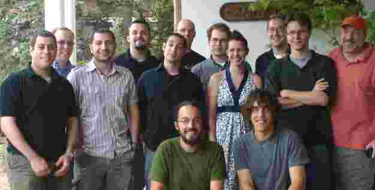

2008 Graduate Workshop in Computational Social Science Modeling and Complexity
Santa Fe Institute
, 15-28 June, 2008

Program Announcement
Students
Faculty
Reading List
Schedule
Homework Problem
Student Projects
GWS Wiki
Return to
Computational Economics
page.
John H. Miller
, miller@santafe.edu.